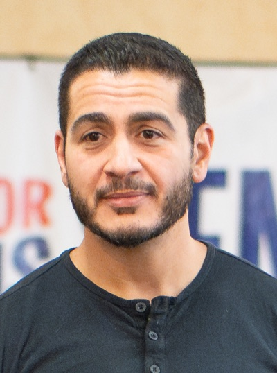
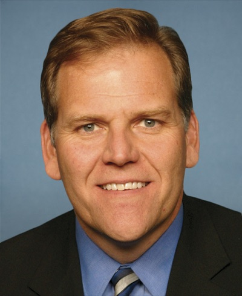
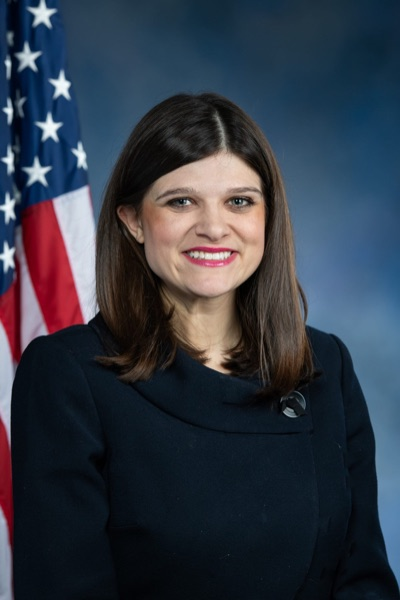

| 최신 여론조사 | ||||||
| 최신순 · 38건 · 양수 = 민주 우위(D+) | ||||||
| 조사기관 | 실사기간 | 모집단 | 표본 | 결과 | 마진 | 비고 |
|---|---|---|---|---|---|---|
| InsiderAdvantage | 2026-10-21 ~ 2026-10-22 | LV | 1200 | El-Sayed 47 – 46 Rogers | D+1 | VoteHub 경유(원출처 URL) |
| ★ Marist Poll | 2026-10-15 ~ 2026-10-18 | LV | — | El-Sayed 50 – 48 Rogers | D+2 | VoteHub 경유(원출처 URL) |
| Rasmussen Reports (R 성향) | 2026-10-12 ~ 2026-10-14 | LV | 798 | El-Sayed 46 – 44 Rogers | D+2 | 일일 브리핑 10/22 추출 |
| InsiderAdvantage | 2026-10-09 ~ 2026-10-10 | LV | 1200 | El-Sayed 48 – 46 Rogers | D+2 | 일일 브리핑 10/17 추출 |
| The Tyson Group (R 성향) | 2026-10-06 ~ 2026-10-08 | LV | 600 | El-Sayed 44 – 46 Rogers | R+2 | VoteHub 경유(원출처 URL) |
| Quantus Insights | 2026-10-05 ~ 2026-10-06 | LV | 744 | El-Sayed 48 – 47 Rogers | D+1 | 일일 브리핑 10/17 추출 |
| YouGov | 2026-09-22 ~ 2026-10-04 | LV | 3947 | El-Sayed 49 – 48 Rogers | D+1 | 일일 브리핑 10/17 추출 |
| Mitchell Research & Communications | 2026-10-01 ~ 2026-10-01 | LV | 682 | El-Sayed 46 – 41 Rogers | D+5 | VoteHub 경유(원출처 URL) |
| Z to A Research (D 성향) | 2026-09-28 ~ 2026-10-01 | LV | 483 | El-Sayed 49 – 42 Rogers | D+7 | VoteHub 경유(원출처 URL) |
| Trafalgar Group | 2026-09-28 ~ 2026-09-30 | LV | 1085 | El-Sayed 47 – 45 Rogers | D+2 | VoteHub 경유(원출처 URL) · 하우스 성향 공화계(후원자 없음 — partisan은 의뢰 당파만, 2026-10-13 정리) |
| ★ Fox News/Beacon·Shaw | 2026-09-24 ~ 2026-09-28 | LV | 1028 | El-Sayed 50 – 49 Rogers | D+1 | ±3·_NIS 상원 주간 2026-10-04 §4·RV 기준 D+3·**8월 Fox 로저스 +4에서 역전**·같은 실사 창에서 Fox가 MI·TX·IA 세 곳 모두 민주 우위 실측 |
| Guidant Polling and Strategy | 2026-09-20 ~ 2026-09-27 | LV | 800 | El-Sayed 48 – 43 Rogers | D+5 | VoteHub 경유(원출처 URL) |
| ★ Marist Poll | 2026-09-24 ~ 2026-09-27 | RV | 1235 | El-Sayed 51 – 44 Rogers | D+7 | 일일 브리핑 ? 추출·1차 출처 보강(10/13) · Registered voters (no LV figure published). MoE ±3.8. Released 2026-09-30. |
| The Tyson Group (R 성향) | 2026-09-24 ~ 2026-09-27 | LV | 600 | El-Sayed 44 – 43 Rogers | D+1 | VoteHub 경유(원출처 URL) |
| co/efficient | 2026-09-21 ~ 2026-09-23 | LV | 843 | El-Sayed 50 – 50 Rogers | D+0 | VoteHub 경유(원출처 URL) |
| Rasmussen Reports | 2026-09-22 ~ 2026-09-22 | LV | 1099 | El-Sayed 47 – 44 Rogers | D+3 | ±3·_NIS 상원 주간 2026-09-27 §4·공화 성향 하우스에서 나온 민주 우위 · 하우스 성향 공화계(후원자 없음 — partisan은 의뢰 당파만, 2026-10-13 정리) |
| ★ The New York Times/Siena University | 2026-09-15 ~ 2026-09-22 | LV | 605 | El-Sayed 49 – 44 Rogers | D+5 | VoteHub 경유(원출처 URL) |
| Cygnal/Beacon Research | 2026-09-18 ~ 2026-09-21 | LV | 600 | El-Sayed 45 – 40 Rogers | D+5 | VoteHub 경유(원출처 URL) |
| Suffolk University | 2026-09-16 ~ 2026-09-20 | LV | 500 | El-Sayed 47 – 40 Rogers | D+7 | 일일 브리핑 09/24 추출 |
| Torchlight Strategies (R 성향) | 2026-09-15 ~ 2026-09-19 | LV | 643 | El-Sayed 43.1 – 44.4 Rogers | R+1.3 | ±4.7·_NIS 상원 주간 2026-09-27 §4·**공화 PAC 의뢰 당파 조사** — 같은 주 비당파 Suffolk +7·공화계 라스무센 +3과 방향 충돌 |
| Emerson College/Nexstar | 2026-09-12 ~ 2026-09-14 | LV | 1000 | El-Sayed 48 – 46 Rogers | D+2 | ±3.0·_NIS 상원 주간 2026-09-20 §4·9/17 발표·비대졸 로저스 +3 / 대졸 엘사예드 +11·호감도 엘사예드 순 +5 대 로저스 순 −4 |
| The Washington Post/George Mason University School of Policy and Government | 2026-09-10 ~ 2026-09-14 | LV | 803 | El-Sayed 48 – 45 Rogers | D+3 | VoteHub 경유(원출처 URL) |
| Trafalgar Group | 2026-09-07 ~ 2026-09-09 | LV | 1079 | El-Sayed 46.3 – 44.8 Rogers | D+1.5 | ±2.9·9/10 보고서·**공화당계 하우스가 민주 우위를 낸 사례**·8월을 규정하던 "로저스 우위 4연속" 서사를 끝낸 3연속 D 우위의 세 번째·최근 6건 평균은 약 엘사예드 +3 · 하우스 성향 공화계(후원자 없음 — partisan은 의뢰 당파만, 2026-10-13 정리) |
| CNN/SSRS | 2026-08-31 ~ 2026-09-06 | LV | 843 | El-Sayed 47 – 44 Rogers | D+3 | ±4.1·9/9 공개·**무당층 엘사예드 +16**으로 같은 주 Glengariff의 로저스 +14와 부호가 정면 충돌(30%p 폭, 현 지도 최대 측정 쟁점)·LV의 약 25%가 미확정(흑인·35세 미만은 40%) |
| Glengariff/WDIV–Detroit News | 2026-08-31 ~ 2026-09-03 | LV | 600 | El-Sayed 44.4 – 45.8 Rogers | R+1.4 | ±4.0·9/8 보도·이번 주 미시간 3건 중 유일한 공화 우위·**무당층 로저스 +14**(CNN의 엘사예드 +16과 부호 상충 — 미해소)·벤슨 주지사 문항과 동일 표본 |
| Epic-MRA | 2026-08-22 ~ 2026-08-28 | LV | 600 | El-Sayed 47 – 43 Rogers | D+4 | ±4.0·8/31 보도·같은 기관 7월 조사는 로저스 +3이었으므로 자체 시리즈 안에서 7포인트 스윙·8월 이후 독립 조사 3연속 엘사예드 우위의 세 번째 |
| MSU/IPPSR·YouGov | 2026-08-10 ~ 2026-08-20 | LV | — | El-Sayed 50 – 45 Rogers | D+5 | 9/1 공개·성인 표본 1,000에서 등록유권자 48–44(D+4)/적극투표층 50–45(D+5)·LV 부분표본 크기 미공표·같은 조사에서 무슬림 후보 기피 응답 37%가 반증으로 병기됨 |
| Susquehanna Polling & Research | 2026-08-11 ~ 2026-08-17 | LV | 800 | El-Sayed 46 – 39 Rogers | D+7 | ±3.46·미결정 9%/기타 4%·이번 주 최신 실사이자 4건 중 상단·직접 공표 링크 미확보(종합 보도 경유) |
| ★ AARP/Fabrizio·Impact | 2026-08-09 ~ 2026-08-11 | LV | 877 | El-Sayed 48 – 47 Rogers | D+1 | ±3.3·공화(파브리지오 워드)+민주(임팩트) 초당 합동·50+ 로저스 +9(65+ +13)/18–49 엘사예드 +14·투표의향 50+ 86% 대 50미만 71% |
| ★ Fox News/Beacon·Shaw | 2026-08-06 ~ 2026-08-10 | RV | 1006 | El-Sayed 47 – 51 Rogers | R+4 | ±3·경선 후 첫 주요 언론 본선 조사 |
| TIPP/TechnoMetrica | 2026-08-06 ~ 2026-08-10 | RV | 1528 | El-Sayed 45 – 42 Rogers | D+3 | ±2.6·폭스와 동일 실사기간인데 부호 반대·기타 7%/미결정 6%·Silver Bulletin 등급 A |
| GBAO (D 성향) | 2026-08-06 ~ 2026-08-10 | LV | 800 | El-Sayed 50 – 44 Rogers | D+6 | ±3.5·일일 브리핑 08/24 추출·원문 대조 일치·민주당 성향 PAC 의뢰 내부조사 — 할인 필요 |
| EPIC-MRA | 2026-07-24 ~ 2026-07-31 | LV | 600 | El-Sayed 43 – 46 Rogers | R+3 | ±4·8/3 공개·경선 후 첫 본선 조사 |
| SoCal Strategies (R 성향) | 2026-07-28 ~ 2026-07-30 | LV | 640 | El-Sayed 41 – 42 Rogers | R+1 | VoteHub 경유(원출처 URL) |
| Mitchell Research & Communications | 2026-07-28 ~ 2026-07-29 | LV | 672 | El-Sayed 45 – 45 Rogers | D+0 | VoteHub 경유(원출처 URL) |
| Glengariff | 2026-07-22 ~ 2026-07-24 | LV | — | El-Sayed 38.7 – 49.0 Rogers | R+10.3 | 본선 가상(8/4 예비 전)·±4 |
| Glengariff | 2026-07-22 ~ 2026-07-24 | LV | — | Stevens 45.5 – 44.7 Rogers | D+0.8 | 본선 가상(8/4 예비 전)·±4 |
| Quantus Insights | 2026-06-29 ~ 2026-06-30 | LV | 947 | El-Sayed 45.2 – 44.1 Rogers | D+1.1 | VoteHub 경유(원출처 URL) |
| 출처 URL은 `data/senate_polls.csv`에 행별로 보관합니다. 당파 후원(D/R 성향) 조사는 공개 선택 편향이 있으니 단일 조사보다 여러 조사의 방향을 함께 보세요. 표는 데이터에서 자동 렌더되며 새 조사가 들어오면 갱신됩니다. ★ = 주목 기관(NYT/Siena·Fox News·Marist·AARP) — 추이 그림에서도 큰 점으로 표시합니다. | ||||||
| 이번 주 판독 — **밴스 10/15 먼로 유세**는 이 경합을 "감사 대 불만"의 시험으로 규정했고, 로저스는 엘사예드의 무슬림형제단 연계를 주장했으나 **Bridge Michigan은 뒷받침 증거를 찾지 못했다**고 명시했다(Michigan Advance). 엘사예드는 같은 날 AOC와 북부 미시간 순회(AOC가 $1M 이전 — Fox 블로그, 미확인). 자금 비대칭 — 3분기 모금은 엘사예드 $33M 대 로저스 $10M인데 TV 광고는 약 2대 1 열세(AP). 2차 토론 10/21(WXYZ), 조기 대면투표 10/24, 오바마 10/24 디트로이트. | ||||||
미시간 Michigan
Gary Peters 은퇴로 민주당이 방어해야 하는 공개석입니다. 8월 경선에서 당 주류의 반대와 자금 열세를 뒤집고 지명된 진보 성향의 Abdul El-Sayed(민주, 전 디트로이트 보건국장)가, 2024년 상원 선거에서 0.3%p 차로 졌던 Mike Rogers(공화, 전 연방하원의원)와 맞붙습니다. 2024년 트럼프가 이긴 주에서 진보 후보가 교외 온건층·아랍계·흑인 유권자 연합을 다시 묶을 수 있는지가 핵심이고, 공화 외부자금이 가장 많이 들어오는 주 가운데 하나입니다.
공개석 (Peters 은퇴) — El-Sayed (D, 8/4 예비 승 약 1%p) vs Rogers (R) · MI
민주 방어Cook Toss-up 10-12Sabato Lean D 10-15IE Tilt D 10-02Kalshi 민주 69¢ 10-18
조사 마진 추이 (양수 = 민주 우위 · 속 빈 점 = 당파 후원 조사)
데이터 기준 2026-10-18
- 여론조사 10-25 — InsiderAdvantage 10/9–10 엘사예드 48–46 · Tyson Group 10/6–8 로저스 46–44(로저스 측 연계 단체 의뢰, 캠프 연계 조사로 취급) · Quantus 10/5–6 엘사예드 48–47 · YouGov 9/22–10/4 49–48 · Marist(10/15–18, 이월) LV 엘사예드 50–48. 10/24 브리핑이 InsiderAdvantage를 47–46으로 적은 것을 바로잡는다 · Cook·Sabato 모두 Toss-up · 10/17 예측시장: Polymarket 엘사예드 71%, Kalshi 68%.
- 판단 10-25 — 조사는 근소하지만 대체로 엘사예드 우위다. 원문은 이 조사 묶음이 민주 상방(Bull) 시나리오를 소폭 강화한다고 본다. 로저스 +2인 Tyson 조사는 캠프 연계 이상치로 취급한다. 원문은 미시간에서 공화당 쪽 강화 신호가 없다고 판단한다.
구도: 민주 방어 공개석(Peters 은퇴) — El-Sayed(D, 진보·전 보건국장) vs Rogers(R, 2024년 0.3%p 패배).
구조 변수: 2024년 트럼프 승리 주에서 진보 지명자의 연합 복원. 공화 외부자금(SLF·트럼프 계열·머스크) 집중 투입 주.
한국 함의: LG·SK·삼성 배터리 공장의 본진이나 후보의 직접 한국 입장은 미확인(추정 연결고리만).
이번 주 변수 주간 10-18 — 모금 3:1 우위 vs 광고 2:1 열세 — 밴스 10/15 먼로, 조사 6건 전부 엘사예드 +1~7
로컬 상황 — 일일 기록
로컬 상황 · 일일 정리본에서 날짜별 누적 · 같은 사안은 처음 본 날짜로 한 번
- 10-25 미시간 현장 조기투표가 10/24 시작했다 · 이월: Bridge Michigan(MBFC 중도좌 / AllSides 중립)은 오바마가 디트로이트에서 엘사예드·조슬린 벤슨과 유세하며 흑인 유권자 투표율을 겨냥한다고 보도했다 · 우파 로컬 기사는 읽지 못했다(Detroit News 중도우의 로저스 지지는 제목 수준) · 유세: 2026-10-24 · 디트로이트 · 버락 오바마(민주) → 압둘 엘사예드(조슬린 벤슨 동반) · 예고됨, 개최 미확인 · 유세: 2026-10-25 · 포트휴런 · 도널드 트럼프(공화) → 마이크 로저스 · 맥모런 플레이스 유세(예고됨), 세인트클레어 카운티 첫 현직 대통령 방문(Fox 2 Detroit 10/19).
- 10-24 현장 사전투표 10/24 개시 · 디트로이트 뉴스의 로저스 지지 선언(제목만) · 유세: 10/24 · 디트로이트 · 오바마(민주) → 엘사이드(조슬린 벤슨 동행) · 장소 미공개 · 유세: 10/25 · 포트휴런 · 트럼프(공화) → 로저스 · 맥모런 플레이스 예고(Fox 2 Detroit)
- 10-23 유세: 10/24 · 디트로이트 · 버락 오바마(민주) → 압둘 엘사예드 · 오후 5시, 장소 미표기(TheGrio 10/14) · 유세: 10/25 · 세인트클레어 카운티 · 도널드 트럼프(공화) → 마이크 로저스 · SAN이 이번 주말 미시간 유세 확인(SAN 10/22) · 오늘 읽은 로컬 기사는 Bridge Michigan(MBFC 중도좌 / AllSides 중립)뿐이며 우파 로컬 매체는 읽지 못함.
- 10-22 1차 토론(10/8)에서 로저스가 엘사예드의 의사 자격과 무슬림형제단 연계 의혹(엘사예드 부인)을 제기 · 유세: 2026-10-24 · 디트로이트 · 버락 오바마(민주) → 압둘 엘사예드 · 오후 5시 예정, 장소 미공개 · 이월: 2026-10-17 · 플랫록 · JD 밴스(공화) → 마이크 로저스 · 타운홀, 재확인 안 됨.
- 10-21 마지막 2차 토론이 오늘 밤(10/21) 열린다 · 이월: 무슬림형제단·감시명단 보도는 재확인하지 못했다 · 유세: 2026-10-17 · 플랫록 · JD 밴스(공화) → 마이크 로저스 · 타운홀(이월, 재확인 안 됨) · 유세: 2026-10-24 · 미시간 · 버락 오바마(민주) → 압둘 엘사이드 · 예정
- 10-20 2차 토론 10/21(수) · 이월: 이전 브리핑의 무슬림형제단·감시명단 의혹은 이 기사에 언급이 없어 재확인 못함 · 이월·재확인 못함: 2026-10-17 · 플랫록 · JD 밴스(공화) → 마이크 로저스 · CBS 주최 타운홀; 2026-10-24 · 미시간 · 버락 오바마(민주) → 압둘 엘사이드(예고)
- 10-18 Fox News(우편향, 10/17 라이브 블로그)에 따르면 로저스는 버치런 유세에서 “민주사회주의자 상원의원”을 경고했다. 트럼프는 엘사예드를 “재앙”이라 불렀다. 둘 다 독립 검증되지 않은 주장이다 · 스태브노·브링크스 등이 밴스 방문을 비판했다 · 이월: 휘트머 10/8 엘사예드 지원 유세 · 2차 토론 10/21 · 조기 대면투표 10/24 개시(Newsweek) · 유세: 2026-10-15 · 먼로 · JD 밴스(공화) → 마이크 로저스 · 스포츠센터 집회, 규모 미기재 · 유세: 2026-10-24 · 디트로이트 · 버락 오바마(민주) → 압둘 엘사예드 · 예고, 장소 미공개(Daily Beast, 좌편향).
- 10-17 이월: 2차 토론 10/21 · Fox 라이브 블로그(우편향) 단독으로 엘사예드 가족의 무슬림형제단 연계 의혹이 제기됐고, 본인은 부인했다. 두 번째 출처가 없어 미확인이다 · 유세: 2026-10-24(예고) · 디트로이트 · 버락 오바마(민주) → 압둘 엘사예드 · 장소 미공개(AP via News4JAX).
- 10-16 이월: 2차 토론은 10/21이다 · Bridge Michigan, Detroit Free Press, Michigan Advance, Detroit News는 모두 확인하지 못했다. 유세: 2026-10-24(예정) · 디트로이트 · 버락 오바마(민주) → 압둘 엘사예드 · 장소 미공개(AP via News4JAX, 10/13, 이월).
- 10-15 이월: 2차 토론 10/21 · 유세: 2026-10-24(예고, 이월) · 디트로이트 · 버락 오바마(민주) → 압둘 엘사예드 · 장소 미공개(AP via News4JAX 10/13).
- 10-14 2차 토론은 10/21이다. 유세: 2026-10-24(예정, AP 10/13 확인) · 디트로이트 · 버락 오바마(민주) → 압둘 엘사예드 · 제니스 벤슨 등 미시간 민주당 인사가 참석할 예정이며 장소는 공개되지 않았다(AP via News4JAX).
- 10-13 2차 토론 10/21 유지 · 오늘 읽은 로컬 매체 없음(Bridge, Michigan Advance 좌, Detroit News 중도우 미수집) · 유세: 2026-10-24(예고, 이월·오늘 재확인 안 함) · 디트로이트 · 버락 오바마(민주) → 압둘 엘사이드 · 장소 미공개(AP via ABC News, 기존 기록).
기준 2026-10-25 · 최근 12건 표시(전체 47건)
의석 현황 — 현직·공석
- 공석 — 현직 은퇴: 2선 현직 Gary Peters(민주)가 2025년 1월 28일 불출마를 발표했습니다. 하원 3선·상원 2선을 마치고 “다음 세대에 횃불을 넘기겠다”고 했고, 가족과 보내는 시간도 이유로 들었습니다. 정치적 압박이 아닌 자발적 은퇴입니다. (NBC News)
개관
경제 — 자동차·EV 배터리 본진: 미시간 상원 레이스의 경제 서사는 EV 배터리에 묶여 있습니다. GM과 한국 LG에너지솔루션의 Ultium Cells 합작이 Lansing·Orion Township에 약 70억 달러 규모로 들어섰고, 2025년 5월 GM이 Lansing의 41GWh 공장 지분을 LG에 매각해 LG 단독 소유로 전환했습니다. 다만 연방 EV 보조금($7,500)이 2025년 9월 종료되자 북미 EV 수요가 급감 — LG는 Lansing 양산을 하반기로 연기했고, GM은 2025년 10월 배터리·EV 시설에서 3,400명 이상 감원을 발표했습니다. (American Progress · Bridge MI)
선거사 — 좁아지는 민주 마진: 미시간 상원은 2018년 Stabenow +6.5 → 2020년 Peters 약 +1.7 → 2024년 Slotkin +0.3으로 민주 우위가 매 사이클 축소됐습니다. 공교롭게 2024년 Slotkin에게 0.3%p로 패한 인물이 이번 공화 후보 Mike Rogers입니다. 동시에 대선은 2020년 Biden 승 → 2024년 Trump +1.5(약 8.3만 표)로 역전됐습니다. (NBC · Ballotpedia 2020)
경제·인구 구성
- 인구는 2025년 기준 약 1,013만 명으로 미국 10위입니다. (Wikipedia)
- 인종 구성은 2024년 기준 비히스패닉 백인 72.2%, 흑인 13.1%, 히스패닉 5.9%, 아시아계 3.4%입니다. (Data USA)
- 중위 가구소득은 2024년 기준 약 72,900달러로 전국 38위입니다. (Wikipedia)
- 인구의 절반가량이 디트로이트 대도시권에 살고, 어퍼반도는 33만 명이 안 되는 희박한 농촌·관광 지역입니다. (Wikipedia)
- 주력 산업은 자동차로 GM·Ford·Stellantis 본사가 디트로이트권에 있습니다. 그랜드래피즈는 Steelcase 등 가구 산업의 중심입니다. (Wikipedia)
역대 선거 결과의 특징
대선 10회 — 민주 7 · 공화 3 / 상원 (class 1) 7회 — 민주 6 · 공화 1 / 상원 (class 2) 6회 — 민주 6 · 공화 0 / 주지사 10회 — 민주 5 · 공화 5 · 파랑 = 민주, 빨강 = 공화, 회색 = 무소속 · 점선 테두리 = 특별선거 · 칸에 마우스를 올리면 마진 · 출처 위키백과 개별 선거 문서(기준 2026-09-30)
- 대선은 2012년 Obama +9.5%p, 2016년 Trump +0.2%p, 2020년 Biden +2.8%p, 2024년 Trump +1.4%p였습니다. (Wikipedia)
- 연방상원은 2018년 Stabenow +6.5%p, 2020년 Peters +1.7%p, 2024년 Slotkin +0.3%p였습니다. 민주가 세 번 연속 이겼지만 마진은 계속 줄었습니다. (Wikipedia)
- 주지사는 2018년 Whitmer +9.6%p, 2022년 Whitmer +10.5%p로 민주가 여유 있게 이겼습니다. (Wikipedia)
- 2016년 이후 대선 승자가 세 번 연속 바뀐 전형적 초경합주입니다. 연방상원은 민주가 지키되 격차가 1%p 안팎까지 좁혀졌습니다.
주지사·주의회
- 현 주지사는 민주당 Gretchen Whitmer로 2019년 1월 취임했습니다. 연임 제한으로 2026년 주지사 선거는 공석 경쟁입니다. (Ballotpedia)
- 주상원 38석은 민주 20·공화 18(2026년 5월 기준), 주하원 110석은 공화 58·민주 51·무소속 1(2025년 1월 기준)입니다. (Wikipedia 주상원 · 주하원)
- 주지사·국무장관·법무장관은 민주지만 주하원이 공화라 트라이펙타가 아닌 분점 정부입니다. (Ballotpedia)
- 2026년 11월 3일에는 주지사(공석)와 주상원 38석·주하원 110석 전체가 연방상원과 함께 걸려 있습니다. (Michigan Advance)
- 주지사 선거의 판세·조사·경과 기록은 미시간 주지사 페이지에서 다룹니다.
유권자 등록·투표율
- 등록 유권자는 약 794만 명입니다(2026년 9월 조회). 정당 등록제는 없습니다. (Independent Voter Project)
- VEP 투표율은 2018년 56.6%, 2020년 73.3%, 2022년 58.9%입니다. 2024년 확정치는 미확인입니다. (U.S. Elections Project)

압둘 엘사이드 Abdul El-Sayed민주
1984년생(42세) · 전 디트로이트 보건국장 · 역학자·의사 · 미시간대 교수
가족 이집트 이민자 아버지·미시간 토박이 계모 슬하 성장; 아내 Sarah Jukaku(정신과 의사), 두 딸
학력 University of Michigan 생물학 학사, Columbia University MD·역학 PhD, Oxford University 공중보건 DPhil(2011, 로즈 장학생)
경력 2018 미시간 주지사 민주 경선 출마(Whitmer에 패배)
펀드레이징 Q1 2026 모금 $2.27M, 현금 $2.52M
강점
- 30세 이하 유권자 최고 지지
- 아랍계·무슬림 커뮤니티(디어본) 연대
- 5~6월 경선 선두 부상
약점
- 본선 경쟁력 최약(Rogers와 동률)
- 무당파 지지 약함
- 진보 노선의 스윙 유권자 이탈 위험
정책 메디케어 포 올 · 그린 뉴딜·부유세 · ICE 폐지 · 이스라엘 공세적 군사원조 중단 요구
🇰🇷 한국 함의 한국 관련 직접 입장은 공개 출처에서 확인되지 않음

마이크 로저스 Mike Rogers공화
1963년생(63세) · 전 연방 하원의원(MI-8) · 전 하원 정보위원장 · 전 FBI 특수요원
가족 노동계급 가정 출생; 부인 Kristi Rogers(2010 결혼), 첫 결혼 자녀 2명; 형 Bill은 전 미시간 주 하원의원
학력 Adrian College 형사사법·사회학 학사(1985), University of Michigan ROTC 육군 임관
경력 MI-8 하원 7선(2000~2012) · 2024 미시간 상원 출마 → Slotkin에 0.34%p 석패
펀드레이징 외부지출 약 $45M 지원, 본인 현금 약 $4.2M(5월 기준)
강점
- 국가안보·정보 전문성
- 전주적 인지도(2024 출마)
- 민주 경선 장기화 동안 본선 선점
약점
- 2024 패배 이력
- 트럼프와의 관계 미묘
- ‘중국 연루’ 사업 이력 공격
정책 대중국 강경·국가안보 · 트럼프 관세 지지(전략적 도구) · 법과 질서·제조업 보호
🇰🇷 한국 함의 대중국 통상·제조업 보호가 핵심; 한국·동맹 직접 거명 입장은 공개 출처 없음(트럼프식 전략적 관세 지지)
민주당 경선 (8/4) — 함께 겨룬 후보들
본선 후보로 확정된 El-Sayed의 상세 프로필은 페이지 맨 위 후보 카드에 있습니다. 아래는 경선에서 함께 겨룬 두 후보입니다.

헤일리 스티븐스민주
Haley Stevens
1983년생(43세) · 연방 하원의원(MI-11) · 전 오바마 행정부 자동차산업 구제 태스크포스
- 학력 American University 정치학·철학 학사(2005), 사회정책·철학 석사(2007)
- 펀드레이징 Q1 2026 개인기부 $1.73M, 현금 보유 약 $3.3M(3인 중 최다)
강점 본선 경쟁력 최강(Rogers 대비 +5) · 상원 지도부 비공식 지지 · 교외 경합지 승리 실적
약점 경선 지지율 추세 열세 · 풀뿌리 열기 부족 · 진보 진영 냉담
정책 제조업·자동차산업 보호 · 대중국 커넥티드 차량 수입 차단(No Chinese Cars Act) · UAW 노동 친화
맬러리 매크모로민주
Mallory McMorrow
1990년생(36세) · 미시간 주 상원의원(2019~) · 전 산업 디자이너
- 학력 University of Notre Dame 산업디자인 학사(2008)
- 펀드레이징 Q1 2026 분기 모금 1위 $2.96M, 현금 $3.69M, 소액 기부 동력 강함
강점 풀뿌리 열기·밀레니얼 대표성 · 소셜미디어 활용력 · 2022 바이럴 연설 전국 인지도
약점 연방 경험 부재 · 전주적 조직력 미검증
정책 교육·LGBTQ 권리·총기 규제 · EV 전환 대비 경제 전환 사무소 설치 · 무차별 관세 반대·동맹 협력형 전략 무역
경선은 외교정책(가자/이스라엘)·당 지도부 노선을 둘러싼 3파전이었습니다. 초기 McMorrow가 선두였으나 5~6월 들어 El-Sayed가 부상했고, McMorrow가 경선 한 달 전 캠페인을 중단하면서 El-Sayed 48.5 – Stevens 47.5 – McMorrow 4.0(개표 99%)으로 끝났습니다. 본선 경쟁력(Stevens 최강)과 경선 모멘텀(El-Sayed)이 엇갈리는 딜레마에서 민주당 유권자가 후자를 택한 셈입니다.
이 선택의 의미는 아직 열려 있습니다. 예비 전 유일한 본선 가상 조사(Glengariff 7/22–24)는 Rogers 49.0 – El-Sayed 38.7(R+10.3)인 반면 Stevens로는 45.5–44.7 동률이었습니다. 그런데 경선 직후 예측시장은 오히려 El-Sayed 59센트로 민주 우위를 매깁니다. 7월 조사가 이름값 낮은 후보를 과소평가한 것인지, 시장이 경선 승리의 기세를 과대평가한 것인지는 8월 이후 본선 조사가 나와야 판별됩니다 — 이 사이트가 9개 주 중 가장 주의해서 볼 지점입니다. (CNBC · Michigan Advance)
roll-call / 입법 관심사
공개석이라 현역 상원의원이 없어, 연방 표결기록은 Haley Stevens(연방하원 MI-11)에게만 존재합니다.
- Haley Stevens (민주) — 미·중 전략경쟁 특위 위원. No Chinese Cars Act(중국 자동차 불공정 무역관행에 관세 부과)와 Slotkin 상원의원과의 Protecting America from Chinese Cars Act(중국 연결차량의 멕시코·캐나다 우회 차단)를 주도했습니다. 표결 기록상 CHIPS and Science Act·IRA에 찬성(연구·기술 소위원장으로 CHIPS 입안 주도). (Stevens 하원실 · GovTrack)
- Mallory McMorrow (주상원)·Abdul El-Sayed (전 Wayne 카운티 보건국장) — 연방 공직 경력이 없어 연방 표결기록 없음.
- Mike Rogers (공화) — 전 연방하원 정보위원장(2011~2015). 대테러·정보·FISA 정책 주도, 퇴임 후 CNN 안보 해설가. (앨라배마의 동명 Mike Rogers 군사위원장과 다른 인물.) (Wikipedia)
roll-call ID·날짜(Voteview/Congress.gov)는 현재 보도·하원 보도자료 수준만 확보 — 정확한 표결 번호는 보강 예정입니다(【수집】).
경선·본선 방식
- 경선 8/4, 결선(runoff) 없음: 본선거 경선은 단순 다수(plurality)로 후보를 확정합니다. 미시간에 결선 제도는 없습니다. (별도 1차 출처 보강 예정 — 【수집】)
- 개방형 경선(open primary): 미시간은 정당 등록제가 없어 등록 유권자는 어느 정당 경선에든 참여할 수 있습니다. 단 한 표에서 두 정당을 교차 선택하면 무효 처리됩니다. (Ballotpedia · LWV Michigan)
- 조기·부재자 투표(2022 Prop 2): 헌법 개정으로 모든 연방 선거마다 최소 9일 연속 조기 대면투표가 보장되고, 단일 신청으로 향후 선거 자동 부재자투표(영구 명부)가 명문화됐으며, 선거 당일 오후 8시까지 동시등록 후 투표가 가능합니다. (Ballotpedia Prop 2)
우편·조기 투표
- 우편(부재자)투표는 사유 없이 신청할 수 있습니다. 우편·온라인 신청은 선거 전 금요일 오후 5시까지, 클럭 사무실 방문 신청은 선거 전날 오후 4시까지입니다. (Michigan Voter Information Center)
- 반송 용지는 소인과 무관하게 선거일 오후 8시까지 클럭 사무실에 도착해야 합니다. 군·해외 유권자만 선거일 소인 뒤 6일 이내 도착을 인정합니다. (Michigan Voter Information Center)
- 대면 조기투표는 주헌법상 선거 전 둘째 토요일부터 선거 전 일요일까지 최소 9일입니다. 2026년 본선은 10월 24일부터 11월 1일까지입니다. (Michigan SOS 조기투표)
- 드롭박스는 선거일 40일 전부터 선거일 오후 8시까지 24시간 이용할 수 있습니다. 등록 유권자 1만 5천 명당 1개 이상이 의무입니다. (Michigan SOS 드롭박스)
- 신분증이 없어 확인서에 서명하고 투표한 표는 정규표입니다. 그 밖의 임시(provisional)투표는 선거 뒤 6일 안에 신원·거주를 확인해야 산입됩니다. (Michigan SOS 선거일 투표)
유권자 등록
- 온라인·우편 등록 마감은 선거일 15일 전으로, 2026년 본선은 10월 19일입니다. 이 날짜는 규정을 적용한 계산치입니다. (Michigan SOS 등록)
- 온라인 등록은 Michigan.gov/Vote에서 가능합니다. (Michigan SOS 등록)
- 자동 등록(AVR)은 국무부 지점 업무 과정에서 시행 중이며, 2026년 5월 절차 변경이 공지됐습니다. (Michigan SOS 공지)
- 2018년 주민발의 3호 이후 선거일 당일까지 클럭 사무실에서 거주 증빙을 갖춰 등록하고 투표할 수 있습니다. (Michigan SOS 등록)
신분 확인
- 투표소에서 사진 신분증을 보이거나, 없으면 확인서(affidavit)에 서명하는 비엄격(non-strict) 방식입니다. (Michigan SOS 선거일 투표)
- 인정 신분증은 미시간 운전면허증·주 ID(만료돼도 인정), 미국 여권 등입니다. 타주·기관 발급증은 유효기간 안이어야 합니다. (Michigan SOS 선거일 투표)
- 신분증이 없어도 확인서 서명만으로 정규 투표용지를 받으므로 별도 임시투표 절차가 없습니다. (Michigan SOS 선거일 투표)
- 신분증 규정의 최근 변경 연도는 공식 사이트에서 미확인입니다.
최근 14일 · 최신 10월 25일 (일) · 원천은 상원 일일 브리핑(매일 오전 갱신)입니다. “정리본”은 발행 단계에서 고정 구조로 압축한 것(원문에 없는 수치는 넣지 않음), “원문 전재”는 브리핑을 그대로 옮긴 것입니다. 종결체가 다르고, 이후 정정된 사실이 있을 수 있습니다. 판세의 현재 값은 위 카드·표를 보세요.
10월 25일 (일) · 정리본
- Michigan Senate debate: Rogers and El-Sayed clash (Newsweek, 10/21) — 재확인. 10/21 마지막 토론에서 두 후보는 이란 전쟁, 트럼프, 종교, 경제, 의료, 중국, 관세를 두고 맞붙었다. 엘사예드는 로저스가 트럼프와 너무 가깝다고 했고, 로저스는 엘사예드가 너무 극단적이라고 했다.
- 여론조사: InsiderAdvantage 10/9–10 엘사예드 48–46 · Tyson Group 10/6–8 로저스 46–44(로저스 측 연계 단체 의뢰, 캠프 연계 조사로 취급) · Quantus 10/5–6 엘사예드 48–47 · YouGov 9/22–10/4 49–48 · Marist(10/15–18, 이월) LV 엘사예드 50–48. 10/24 브리핑이 InsiderAdvantage를 47–46으로 적은 것을 바로잡는다 · Cook·Sabato 모두 Toss-up · 10/17 예측시장: Polymarket 엘사예드 71%, Kalshi 68%.
- 자금: 없음
- 로컬: 미시간 현장 조기투표가 10/24 시작했다 · 이월: Bridge Michigan(MBFC 중도좌 / AllSides 중립)은 오바마가 디트로이트에서 엘사예드·조슬린 벤슨과 유세하며 흑인 유권자 투표율을 겨냥한다고 보도했다 · 우파 로컬 기사는 읽지 못했다(Detroit News 중도우의 로저스 지지는 제목 수준) · 유세: 2026-10-24 · 디트로이트 · 버락 오바마(민주) → 압둘 엘사예드(조슬린 벤슨 동반) · 예고됨, 개최 미확인 · 유세: 2026-10-25 · 포트휴런 · 도널드 트럼프(공화) → 마이크 로저스 · 맥모런 플레이스 유세(예고됨), 세인트클레어 카운티 첫 현직 대통령 방문(Fox 2 Detroit 10/19).
- 주 함의: 조사는 근소하지만 대체로 엘사예드 우위다. 원문은 이 조사 묶음이 민주 상방(Bull) 시나리오를 소폭 강화한다고 본다. 로저스 +2인 Tyson 조사는 캠프 연계 이상치로 취급한다. 원문은 미시간에서 공화당 쪽 강화 신호가 없다고 판단한다.
원천: _NIS 상원 일일 브리핑 KR(2026-10-12 ~ 2026-10-25). 추출 scripts/ingest_senate_daily.py · 렌더 daily_log_md().
이 표는
data/senate_polls.csv에서 자동 생성됩니다 — 프로즈에 수치를 박아두지 않으므로 새 조사가 수집되면 이 페이지도 함께 갱신됩니다. 단일 조사보다 여러 조사의 방향을 보세요.
조사 동향 — 일일 기록
여론조사 동향 · 일일 정리본에서 날짜별 누적 · 같은 사안은 처음 본 날짜로 한 번
- 10-25 InsiderAdvantage 10/9–10 엘사예드 48–46 · Tyson Group 10/6–8 로저스 46–44(로저스 측 연계 단체 의뢰, 캠프 연계 조사로 취급) · Quantus 10/5–6 엘사예드 48–47 · YouGov 9/22–10/4 49–48 · Marist(10/15–18, 이월) LV 엘사예드 50–48. 10/24 브리핑이 InsiderAdvantage를 47–46으로 적은 것을 바로잡는다 · Cook·Sabato 모두 Toss-up · 10/17 예측시장: Polymarket 엘사예드 71%, Kalshi 68%.
- 10-24 Marist(10/15–18, RV 1,185명, LV ±4.3) LV 엘사이드 50–48, RV +7, 이전 Marist 미시간 조사 없음 · 라스무센(공화 성향) 10/12–14 엘사이드 46–44 · 인사이더어드밴티지 엘사이드 47–46(세부 미확인).
- 10-23 토론 후 조사 없음 · Marist(10/21 발표) 엘사예드 50, 로저스 48 — 조사 기간·표본 미확인으로 집계 제외 · 이월: Rasmussen(R) 10/12–14 엘사예드 46–44 · Inside Elections 10/1 Tilt D 상향 · Polymarket 71%/Kalshi 68% 엘사예드.
- 10-22 Newsweek 10/21 집계(모두 LV): Rasmussen(R) 10/12–14 엘사예드 46–44 · InsiderAdvantage(R) 10/9–10 48–46 · Quantus 10/5–6 48–47 · YouGov 9/22–10/4 49–48 · Tyson Group(로저스 우호 단체 후원) 10/6–8 로저스 46–44 · RCP 평균 엘사예드 약 +2.6 · 예측시장 Polymarket 71%, Kalshi 68% 엘사예드 우세(Newsweek).
- 10-21 Rasmussen Reports(R) 10/14(798 LV) 엘사이드 46–44 · InsiderAdvantage(R) 10/10(1,200 LV) 엘사이드 48–46 · Wedgewood 10/9(607 LV) 엘사이드 53–47 · Tyson Group(R) 10/8(600 LV) 로저스 46–44 · 52건 평균 엘사이드 47.4–44.5(+2.9, 10/14 갱신이라 뒤처졌을 수 있음) · 등급(9월 이후 변경 없음): Cook·Sabato·Fox·RCP·Inside Elections 접전(Toss-up), Silver Bulletin·DDHQ·Economist·Split Ticket 민주 우세(Lean D) (Pollsmax)
- 10-20 Fox News/Beacon(주목 기관, 9/28, 1,028명 LV) 엘사이드 +1 · YouGov 10/4(3,949명 LV) +1 · Quantus(R) 10/6(762명 LV) +1 · Pollsmax 평균 엘사이드 +3.3.
- 10-17 신규 6건, 모두 엘사예드 우세 · InsiderAdvantage(10/9~10, LV 1,200) 48–46 · Quantus Insights(명단상 공화 성향, 10/5~6, LV 744) 48–47 · YouGov(9/22~10/4, LV 3,947) 49–48 · Mitchell(10/1, LV 682) 46–41 · Wedgewood(LV 607, 기간 미기재) 53–47 · Z to A Research(민주당 성향 단체 Rust Belt Rising 의뢰, 기간·표본 없음) 49–42.
- 10-16 포브스가 Fox News 조사(10/2) 엘사예드 50, 로저스 49를 실었다. 조사기간·표본은 적혀 있지 않다(포브스). 쿡 Toss-up(이월).
- 10-15 원문 집계 제외(표본·오차범위 미확인, Newsweek 10/12 경유): InsiderAdvantage 10/9–10 엘사예드 48, 로저스 46(직전 9/18 47–45) · Wedgewood 10/7–8 53–47 · Quantus 10/5–6 48–47 · YouGov 9/22–10/4 49–48 · Z to A Research(민주당 성향 단체 Rust Belt Rising 의뢰) 49–42.
- 10-12 InsiderAdvantage(목록일 10/11) 엘사예드 48–46, 잠정 · Mitchell Research(10/5, 682명 LV, ±3.8) 46–41 · Trafalgar Group(10/1, 1,085명 LV, ±2.9) 47–45 · Fox News(9/30, 1,028명 LV, ±3) 50–49 · Marist Poll(9/30, 1,235명 RV, ±3.8) 51–44 · 270toWin 최근 5개 조사 평균은 엘사예드 47.8, 로저스 43.8이다(270toWin). Fox·Marist의 직전 미시간 조사는 수집하지 못했다.
- 10-11 신규 없음. 이월 조사(RCP)는 Quantus 10/7 엘사이드 48–47, YouGov 10/6 49–48, Mitchell 10/5 46–41이다. 토론 후 조사는 확인하지 못했다.
- 10-08 Quantus(10/7) 48–47 · Mitchell Research(10/5) 엘사예드 46–41(+5) · YouGov(10/6) 49–48 · Marist(9/30) 51–44 · Fox(9/30) 50–49 · RCP 평균 엘사예드 +3.6(Toss-up).
기준 2026-10-25 · 최근 12건 표시(전체 29건)
최신 자금 상황 (기준 2026-10-18) — 3분기 El-Sayed 약 $33M vs Rogers $10M(Punchbowl, 10/15 FEC) · 공개 지출 $2.05억+로 주 기록 · 공화 외부자금 $5,930만 vs 민주 $2,300만(Bridge 10/2) · TV 광고 약 2:1 공화 우위(AP)
| FEC 분기 신고 — 사이클 누적 | ||||
| 취득 2026-10-19 · 단위 $M · 후보 본인 위원회 기준 | ||||
| 후보 | 정당 | 사이클 누적 모금 | 보유 현금 | 보고 마감 |
|---|---|---|---|---|
| 압둘 엘사이드 (Abdul El-Sayed) | 민주 | $45.18M | $3.79M | 2026-09-30 |
| 마이크 로저스 (Mike Rogers) | 공화 | $20.57M | $6.53M | 2026-09-30 |
| `scripts/fetch_fec_fundraising.py`가 FEC API에서 주간 취득한 원장입니다(자동). **슈퍼팩 외부지출은 포함되지 않습니다** — 이 사이클에서는 외부지출이 후보 자금보다 큰 주가 여럿이라, 위 상자의 외부지출 메모와 함께 보세요. 【수집】은 해당 후보의 FEC 신고가 아직 없다는 뜻입니다(추정으로 채우지 않음). FEC는 법적 이름으로 신고되므로 표기가 이 사이트와 다를 수 있습니다. | ||||
아래는 Q1(3/31 마감) 시점의 해설입니다 — 위 표는 FEC 원장에서 자동 렌더되는 사이클 누적치라 기준이 다릅니다.
McMorrow가 Q1 모금 1위(캠프 누적 $8.6M), Rogers가 보유현금 1위입니다. Stevens는 모금의 약 84%를 소진해 burn rate가 가장 높습니다. Rogers는 외부지출(outside spending) 약 $45M 확보가 보도됐으나, 이는 후보 캠프 직접 모금과 구분되는 외부 PAC 지출입니다(FEC 1차 확인 권장). (Michigan Advance · Detroit News)
자금 투입·지출 — 일일 기록
자금 투입·지출 · 일일 정리본에서 날짜별 누적 · 같은 사안은 처음 본 날짜로 한 번
- 10-24 뉴스위크(10/16): 7월 중순~9/30 모금은 엘사이드가 많으나 보유 현금은 로저스가 더 많다 · 금액과 선거 직전 보고는 찾지 못했다.
- 10-22 10/2 기준 공시 지출 2억 500만 달러 이상, AdImpact 기준 공화 성향 광고비 약 5,900만 달러 대 민주 성향 약 4,380만 달러, 선거일까지 약 6,500만 달러 예약(약 4,200만 달러가 로저스에 유리) · No Going Back(MAGA Inc. 계열) 1,300만 달러 이상, America PAC 약 390만 달러(Bridge Michigan 중도좌) · 후보 본인 3분기 FEC 수치는 미확보.
- 10-17 3분기 엘사예드 약 $33M 대 로저스 약 $10M(Punchbowl; The Well News는 로저스 $9.6M) · AP(Newsweek 경유)는 엘사예드가 광고에서 거의 2대 1로 열세이고 외곽단체가 로저스 지원에 큰돈을 쓴다고 보도했다 · Fox News 라이브 블로그(우편향)는 AOC가 Abdul for Michigan Victory Fund에 $1M을 옮겼다고 전했다.
- 10-16 이월: 엘사예드는 광고비에서 약 2대 1로 열세다(AP, 재확인 안 함).
- 10-15 엘사예드는 광고비에서 거의 2대 1로 밀리고 있으며, 이동과 언론 출연으로 만회하고 있다(AP 인용, Newsweek).
- 10-14 FEC 기준 외부 자금은 공화당 측 5,930만 달러, 엘사예드 측 2,300만 달러다. SLF가 로저스를 위해 약 2,200만 달러, MAGA Inc. 계열 No Going Back이 1,300만 달러 이상, America PAC가 약 390만 달러를 썼다. AdImpact 집계로는 선거일까지 6,500만 달러가 추가로 예약됐고, 그중 약 4,200만 달러가 로저스 지원이다(Bridge Michigan).
- 10-08 SMP가 광고 시간을 확보한 9개 주에 미시간이 들어 있다(Ohio Capital Journal, 좌).
- 10-04 공개 지출 2억 500만 달러 이상 · No Going Back PAC 로저스 지원 1,300만 달러 이상, 선거일까지 6,500만 달러 예약(약 4,200만 달러가 로저스 지원). Bridge Michigan
- 10-03 MAGA Inc. 연계 No Going Back PAC가 로저스에 1,300만 달러 이상(오하이오 다음으로 큰 트럼프 측 단일 주 지출). 본선까지 6,500만 달러 예약 중 약 4,200만 달러가 로저스에 유리. Bridge Michigan
- 09-25 엘사예드가 앤아버 유세에서 기업 PAC 자금을 받지 않는다고 밝혔다(미시간퍼블릭라디오).
- 09-22 후보+지원세력 1억 5,000만 달러 이상 지출 · 엘사예드 7/15 기준 1,450만 달러 모금(로저스보다 370만 달러 많음) · America PAC(머스크) 신규 진입, 금액 미확정【수집 필요】 · SMP 추가 1,000만 달러(9/16, 기존) · SLF 예약 4,500만 달러(1회 증액)
- 09-21 SLF 미시간 예약 4,500만 달러(이후 증액). Senate Majority PAC 추가 1,000만 달러로 누적 3,000만 달러. 머스크 America PAC 참전. 반엘사예드 공화 슈퍼팩 600만 달러 매입. 출처
기준 2026-10-25 · 최근 12건 표시(전체 18건)
미시간은 LG에너지솔루션·SK온·삼성SDI 한국 배터리 기업의 대미 생산기지가 집중된 EV 산업 본진입니다. 특히 Lansing의 LG 단독 소유 공장은 이 레이스의 경제 서사 한복판에 있습니다.
- 직접 확인: 세 민주 후보·공화 Rogers 모두 한국을 직접 겨냥한 표결·법안·발언은 공개 출처에서 확인되지 않습니다. Stevens의 ‘No Chinese Cars Act’·’Protecting America from Chinese Cars Act’는 대상이 중국입니다.
- 추정 연결고리(사실 아님, 파급효과 차원): Stevens가 옹호한 IRA·국내 EV배터리 제조 강화·중국차 차단은 미시간 내 한국계 배터리 투자 환경에 간접 영향을 줄 수 있으나, 이는 직접적 한국 입법이 아니라 정책의 파급효과에 대한 추정입니다. 단정하지 않습니다.
- 따라서 미시간에서 한국 독자에게 실질적인 변수는 후보 개인의 한국 입장보다 관세·EV 보조금 정책의 거시 향배이며, 신규 한국 관련 발언·표결이 확인되면 Korea Watch에 기록합니다.